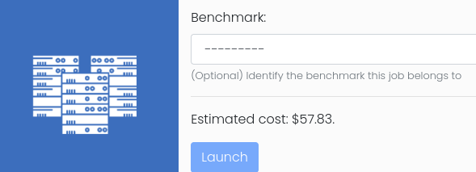

User Guide
This guide is for standard users of the Open Front End, who can access HPC clusters and applications that have been setup by administrators. Users can prepare, submit and run jobs on the cluster through the Front End.
Access to the System
An administrator should have arranged access to the system for a standard user:
- A URL should be provided on which an instance of the Cluster Toolkit Front End is deployed.
- The Google identity of the user should be whitelisted to access the instance.
- The user should be set as an authorised users on existing HPC clusters.
- Admins can optionally set up quotas to restrict the amount of resources that can be consumed by individual users.
Discuss requirements with the admin user in your organisation:
- Applications may require certain instance types to run efficiently on GCP. Admins may be able to create new Slurm partitions to support new instance types.
- Some applications may require additional configurations at install time e.g. to switch on optional features. Admins can provide binaries for additional application versions/variants.
On first visit, click the Login link on the home page, then click the Login with Google link. The system will then attempt the authenticate your account through OAuth with Google.
Clusters
Shown on the cluster page is a list of active clusters the current user is authorised to use. Clusters are created and managed by admin users so messages on these pages are for information only. The underlying infrastructures, such as network and storage components, are also managed by admin users so those pages are not accessible by ordinary users.
Applications
Shown on the application page is a list of pre-installed applications on authorised clusters. Applications are set up by admin users so messages on these pages are for information only. Application detail pages provide extra information regarding the packages.
There are three types of applications:
- Those installed via the Spack package manager.
- Those installed from custom scripts as prepared by the admin users.
- Those manually installed on the clusters by admin users and then registered with this system.
Most open-source applications are covered by Spack. For in-house applications, or those not yet supported by Spack, custom installation is often a good option. Alternatively, admin users can manually install applications on a shared filesystem and register them to the system by providing installation paths and load commands (e.g. modulefiles). In practice, end users do not need to distinguish these different types as they have access to a unified web interface to automate job creation and submission.
Jobs
From an application page, click the New Job action to set up a job.
In most cases, users do not need to be concerned about the application's
software environment because the system handles that automatically. For
example, if an application has been set up as a Spack package, the system will
automatically invoke spack load to configure its environment, e.g. putting
the application binaries in $PATH.
On the other hand, users need to provide the exact steps setting up jobs through scripts. A run script can either be located at a URL or provided inline in the job creation form. A run script may provide additional steps that download and/or prepare input files before invoking the application binary. It may also perform post-processing tasks as required.
Using Cloud Storage
When submitting a new job, the end user may optionally specify:
- a URL from which input files are downloaded -
http://orhttps://URL for an external storage, or ags://URL a Google cloud storage bucket. - a
gs://URL to which output files are uploaded.
The system supports using Google Cloud Storage (GCS) buckets as external storage. Here the GCS bucket is a personal one belonging to the end user (for admin users this is not to be confused with the GCS bucket that supports the deployment of this system). A one-time set-up for the GCS bucket is required per cluster: from the Actions menu of a cluster, click Authenticate to Google Cloud Storage and then follow Google's instructions to complete the authentication.
Building Logic Directly in Run Script
Users can prepare the input data directly within the run script by using arbitrary scripting. Simple tasks may be performed in this way, e.g. downloading a public dataset from GitHub, or copying files already on the shared filesystem to the working directory.
Preparing Data Manually
It is also possible to prepare job data manually on the cluster. Users can always SSH into cluster login node and run arbitrary commands to prepare data in their home directories. Then job run scripts can access these files as needed.
Manually preparing data is probably the most tedious. However, it can be most cost-effective if a large amount of data is to be transmitted over the internet, or the data is to be shared by multiple job runs. Moving large datasets from inside the run script can add significant cloud spending as all compute nodes reserved for jobs are being charged.
Benchmarks
A benchmark is effectively a collection of jobs using the same application on the same dataset. The application version and input dataset should always be the same; the compiler/libraries to build the application and the cloud instance types to run the application can differ, so that the most performant or cost-efficient ways of running the jobs can be established through benchmarks.
New benchmarks can be created by an admin user from the Benchmarks section of the website.
For standard users, when running a job, there is an option to associated that job to an existing benchmark, as shown in the following figure:

For benchmark jobs, the job script should contain logic to produce a key
performance indicator (KPI) which will be sent back to the service machine and
stored in the database. Job script should extract appropriate information from
the job output, and use suitable scripting to create a file called kpi.json
and place it in the current working directory.
This JSON file should be in the following format:
{
"result_unit": "some unit",
"result_value": "some value"
}
Remote Desktops
Clusters can offer a Linux desktop that runs in your browser, which is convenient for visualisation, pre- and post-processing, or any graphical application. From the cluster's Actions menu, open Remote Desktops to see the desktop targets the administrator has enabled:
- Login node desktop: a desktop session on the cluster's login node. It shares the node with other users, so it suits lighter, 2D interactive work.
- Visualisation desktop: a desktop on a dedicated node from its own Slurm partition, which may carry a GPU for accelerated 3D rendering.
Open a target and click Start Desktop. The desktop node is allocated if it is not already running, the page refreshes while the desktop service starts, and the desktop then appears in the page. Each session runs under your own Google and OS Login identity, so you see your home directory and the cluster's shared filesystems exactly as you would over SSH.
Stop Desktop powers the node down and ends every session on it. For that reason only the user who started a desktop, or an administrator, can stop it.
Vertex AI Workbenches
Vertex AI Workbenches give the user a dedicated interactive environment to perform pre- or post-processing of data directly from the cluster, as Jupyter Notebooks.
Please refer to the Workbench User Guide.
This guide is adapted from user_guide.md in the Cluster Toolkit repository. Last synced with upstream commit d27dd72 (21 October 2026).